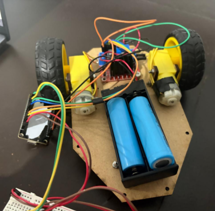
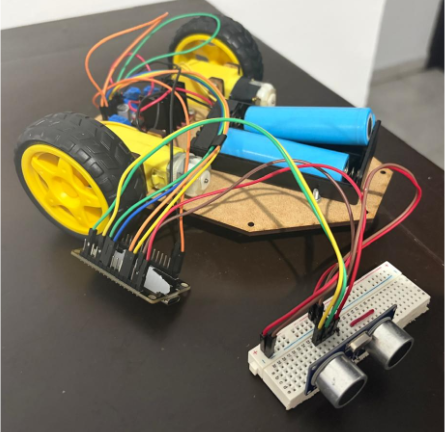

Sensores
Esta página resume qué sensores se probaron, qué problemas tuvieron y cuáles se eligieron al final. Para ver cómo se programa cada uno, consulta Programación de componentes.
Primeras pruebas
Durante la semana 2 se probaron con la ESP32 el ultrasónico, el TCS34725 y el MPU HW-123 (un módulo parecido al MPU6050), junto con los actuadores del prototipo.


Primeras pruebas de actuadores y sensores funcionando juntos con la ESP32


Primeras pruebas de actuadores y sensores funcionando juntos con la ESP32 (otra vista)
Resumen de decisiones
Sensor |
Problema encontrado |
Decisión |
|---|---|---|
Ultrasónico |
Fácil de incorporar, pero las mediciones tenían mucho ruido. |
Se buscaron alternativas láser (VL53L0X). Se conservaron para los laterales, donde su rango a corta distancia destaca más. |
VL53L0X |
Al conectarlos al bus I2C hubo muchos problemas. |
Se creó un segundo canal I2C con otros dos pines. |
MPU HW-123 / MPU6050 |
No era un 6050 típico, y no era compatible con las librerías. Después, las lecturas no eran precisas para conocer la posición del robot. |
Se reemplazó por el BNO055, que usan los robots de RoBorregos. |
BNO055 |
Una de las unidades dejó de dar lecturas durante las pruebas. |
Se cambió por otra unidad y no hubo más problemas. |
TCS34725 |
Se necesitaba probarlo con colores parecidos a los de la competencia. |
Se probó con un LED RGB de cátodo común y hojas de colores similares a los de la competencia. |
Cámara OV7670 (VGA) |
Las conexiones y todo el sistema serían más complicados de implementar con la Raspberry. |
Se reemplazó por una cámara con conexión CSI. |
Ultrasónicos: divisor de voltaje
Los ultrasónicos operan a 5 V, pero los pines GPIO de la ESP32 trabajan a 3.3 V. Si la señal ECHO llega directo a la ESP32 podría dañarla, así que se usa un divisor de voltaje con una resistencia de 1 kΩ y una de 2 kΩ.
Importante
Un voltaje de 5 V directo a un pin de la ESP32 puede dañarla. Siempre revisa el voltaje de salida de un sensor antes de conectarlo.
Bus I2C y direcciones
Todos los sensores, excepto los ultrasónicos, se comunican por I2C, lo que ahorró muchos pines de la ESP32.
El BNO055 tiene un pin ADD que se conectó a GND para darle la dirección 0x28.
Así, el TCS34725 puede usar la dirección 0x29, sin necesidad de configurar nada por software.
Los VL53L0X van en un segundo canal I2C con otros dos pines de la ESP32.
Truco
Si dos dispositivos I2C comparten la misma dirección no pueden estar en el mismo bus. Antes de conectar algo nuevo, revisa su dirección en la hoja de datos.
Colocación del BNO055
Para las pruebas, el BNO055 se debe colocar en el centro del robot. En protoboard hubo que centrarlo manualmente.